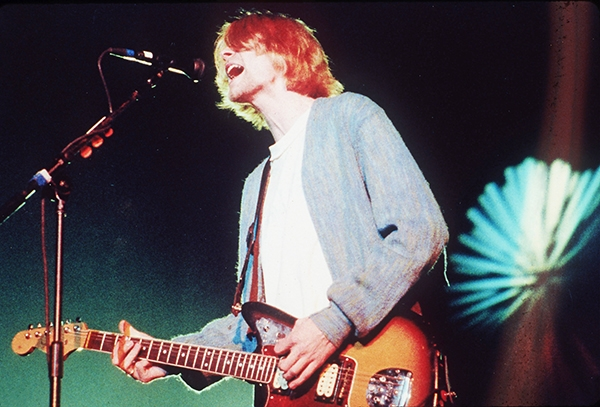

"Кино" отыграли первые концерты в воссоединенном составе - целых три вечера подряд гости столичной "ЦСКА Арены" слушали хиты легендарной группы. Эти выступления должны были пройти еще год назад, но пандемия отодвинула встречу с публикой.
"Спасибо вам за то, что дождались", благодарили музыканты со сцены.
Все время на сцене находился бессменный гитарист группы Юрий Каспарян. Главные хиты играли все вместе. Голос Виктора Цоя звучал в записи.
В ближайшие выходные - 22 и 23 мая - группа представит программу в родном Санкт-Петербурге.
Нейросеть Magenta написала несколько треков, воссоздающих стиль умерших рок-музыкантов. Среди них - Курт Кобейн, Джим Моррисон, Эми Уайнхаус, Джимми Хендрикс и другие.

Трек, имитирующий группу Nirvana, напоминает одновременно хиты "Come as you are" и "Bleach". В записи принял участие музыкант трибьют-группы Эрик Хоган: ему принадлежит вокал, пишет Rolling Stone. Авторы проекта признаются, что эта запись была одной из наиболее сложных для искусственного интеллекта. Вокальные партии, в особенности нужные интонации, компьютер воссоздавать должным образом пока не умеет, поэтому озвучивать все композиции пришлось людям.
Для того, чтобы сделать трек, нейросеть проанализировала от 20 до 30 песен каждого исполнителя в виде MIDI-файлов. Для удобства разработчики разбили их на отдельные дорожки с соло-гитарой, басом, вокалом и так далее. После этого искусственный интеллект сгенерировал новые риффы: по признанию авторов проекта, 90 процентов из них получились плохими. После этого из оставшихся 10 процентов были отобраны удачные моменты.